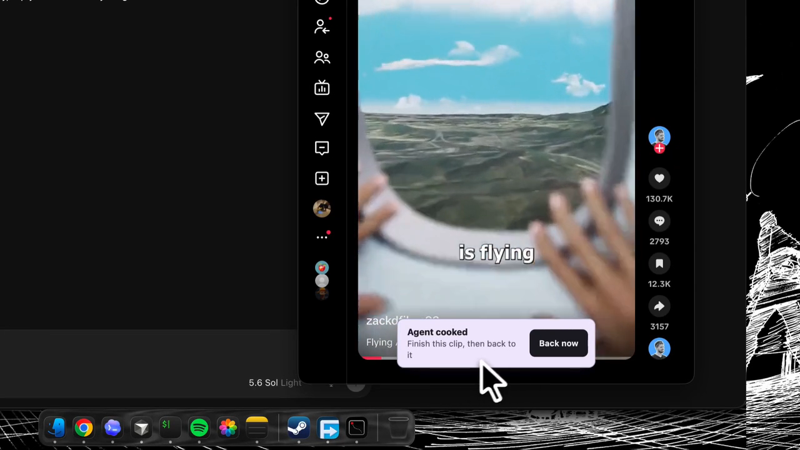

A short-form waiting room for coding agents
Prompt your agent.
Go rot.
Your feed opens while Codex or Claude works, then gets out of the way when it needs you.
- 1 Delegate
- 2 Rot responsibly
- 3 Come back on cue
Go Rot in action
Your real feed while the agent works.
Back on cue when it needs you.

Go RotRot responsibly.